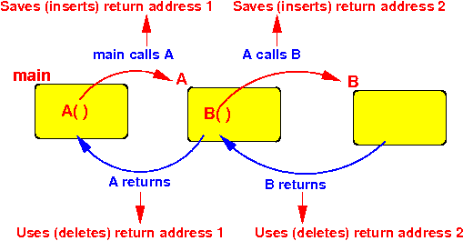

- In the story of
Hansel and Gretel,
the kids can't find their way home
because
birds ate the bread crumbs they
used to marked their return direction:
This analogy is also applicable in function calls:
- You can lose your return address if you're not careful !!!
- Leaf method/function:
- A leaf method/function = a method/function that does not call any other method/function
- Non-leaf method/function:
- A non-leaf method/function = a method/function that calls some method/function
Example:
public static void main(String[] args) { A( ); } public static void A( ) { ... B( ); // Calls B( ) ... } public static void B( ) { ... // Does not call any method/function ... }Methods main( ) and A( ) are non-leaf methods/functions
Method B( ) is a leaf method/function
- Suppose we implements this
program
naively using
bl instructions:
public static void main(String[] args) { A( ); } public static void A( ) { ... B( ); // Calls B( ) ... } public static void B( ) { ... // Does not call any method/function ... }If we naively use what we have learned, we will get the following program (I used some dummy instructions between the bl and mov pc, lr instructions to show where the program is executing):
main: mov r0, #1111 mov r1, #1111 bl A mov r2, #1111 mov r3, #1111 Stop: A: mov r0, #2222 mov r1, #2222 bl B // Overwrites lr (A's return address to main !) mov r2, #2222 mov r3, #2222 mov pc, lr // A fails to return to main !!! B: mov r0, #9999 mov r1, #9999 mov pc, lr // B succeeds to return to AIf you run this program in EGTAPI, you will see these instruction executed:
mov r0, #1111 mov r1, #1111 bl A A: mov r0, #2222 mov r1, #2222 bl B B: mov r0, #9999 mov r1, #9999 mov pc, lr // Returns to A mov r2, #2222 // Second half of A mov r3, #2222 mov pc, lr // Jumps to instruction AFTER "bl B" !!! mov r2, #2222 // Second half of A mov r3, #2222 mov pc, lr // Jumps to instruction AFTER "bl B" !! mov r2, #2222 // Second half of A mov r3, #2222 mov pc, lr // Jumps to instruction AFTER "bl B" !! .... (infinite loop !!) (Because the LR registers contains the return address used by B !!! and A is using it to return to main - failure !!!)The reason that the program behaves this way is because:
- When A( ) calls
B( ) with:
bl Bthis assembler instruction will update the LR register while the LR register contains the return address of A( ).
That means that A( ) can no longer return to main( ) !!!
- When A( ) calls
B( ) with:
- Example Program:
(Demo above code)

- Prog file: /home/cs255001/demo/asm/8-sub/bl+rts2.s
How to run the program:
- To compile: as255 bl+rts2
- To run: use EGTAPI
- Lesson that you learned
from this example:
- In non-leaf functions,
we cannot leave the
return addresses in the
LR register
I.e.: we must save the return addresses !!!
- In non-leaf functions,
we cannot leave the
return addresses in the
LR register
- $64,000 question:
- How should we save the return addresses of the (non-leaf) function calls ?????
- Computer programs maintain
a lot of information
Each type of information must be stored as efficiently as possible !!
- In CS171, you have
started to learn
some data structures that
help you
store and organize
information.
These data structures should have included:
- Queues:
- Items inserted into a queue are
removed in the
First In First Out order
(The next item removed from a queue is the earliest item inserted)
- Items inserted into a queue are
removed in the
First In First Out order
- Stack:
- Items inserted into a stack are
removed in the
First In Last Out order
(The next item removed from a queue is the last item inserted)
- Items inserted into a stack are
removed in the
First In Last Out order
We will use the stack data structure to store return addresses because of the ordering in which the method calls returns:
- The first method/function
that is called is the
last method/function that
returns !!!!

The stack is the most efficient way to store return addresses because it matches the call/return ordering of methods/function
- Queues: